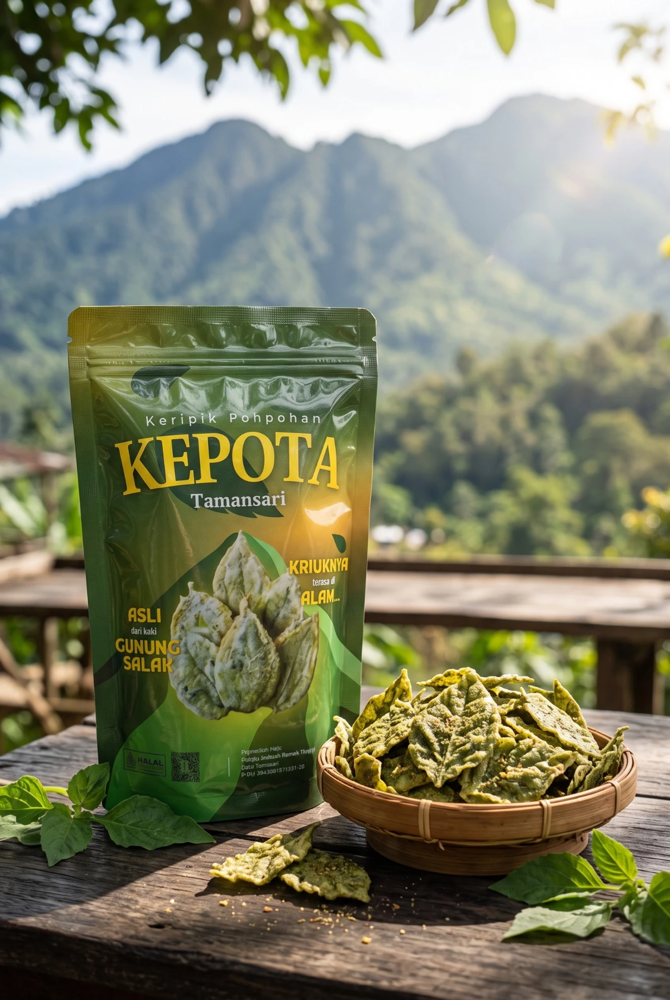
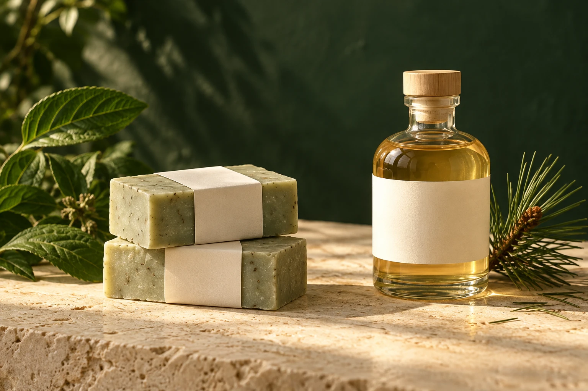

Sabun pohpohan
Eksplorasi produk perawatan berbahan pohpohan bersama produsen kosmetik. Peluncuran mengikuti formulasi, uji mutu, stabilitas, dan penyelesaian notifikasi.
Belum tersedia untuk pemesanan.
Kenali bahan, temui cerita pengolah, dan lanjutkan hubungan dengan masyarakat melalui produk lokal.

Pohpohan hadir dalam bentuk keripik yang renyah. KEPOTA membawa identitas bahan lokal dan kerja masyarakat ke dalam satu kemasan.
Varian rasa, stok, harga akhir, biaya kirim, serta informasi kemasan dikonfirmasi tim sebelum pembayaran. Baca label produk untuk bahan, alergen, penyimpanan, dan nomor produksi.
Hubungan dengan hutan tidak berhenti setelah kunjungan. Kenali perjalanan bahan dan simpan nomor produksi pada kemasan untuk pemesanan ulang atau pertanyaan mutu.
Asal cerita: agroforestri dan masyarakat Tamansari.
Bahan utama: pohpohan, sebagaimana identitas produk.
Informasi per kemasan: ikuti komposisi, nomor produksi, dan masa simpan yang tertera pada label fisik.
Pertanyaan atau keluhan: kirim foto kemasan dan nomor produksi melalui kontak ArahWisata.
Tanyakan asal produk ↗Eksplorasi pohpohan dan tegakan pinus membuka ruang pengembangan produk bernilai tambah.

Ilustrasi konsep produk. Bentuk dan kemasan bukan dokumentasi produk jadi.
Eksplorasi produk perawatan berbahan pohpohan bersama produsen kosmetik. Peluncuran mengikuti formulasi, uji mutu, stabilitas, dan penyelesaian notifikasi.
Belum tersedia untuk pemesanan.
Pengembangan berbasis penelitian bahan Pinus merkusii, keamanan pangan, formulasi, proses, dan perizinan. Produk ini belum menjadi sajian program wisata.
Belum tersedia untuk pemesanan.